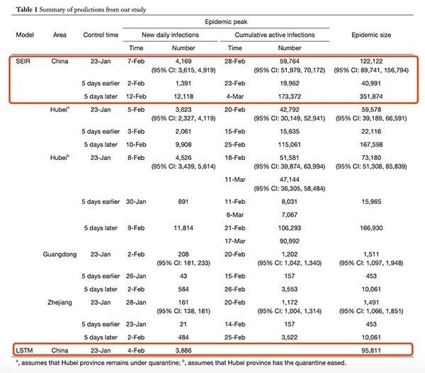
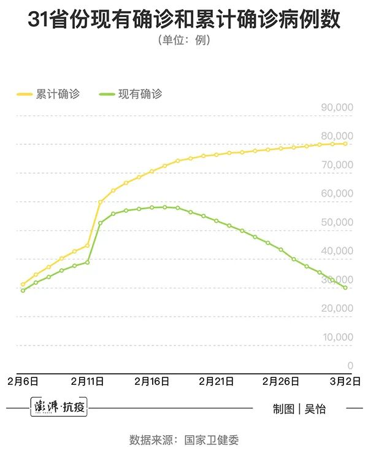
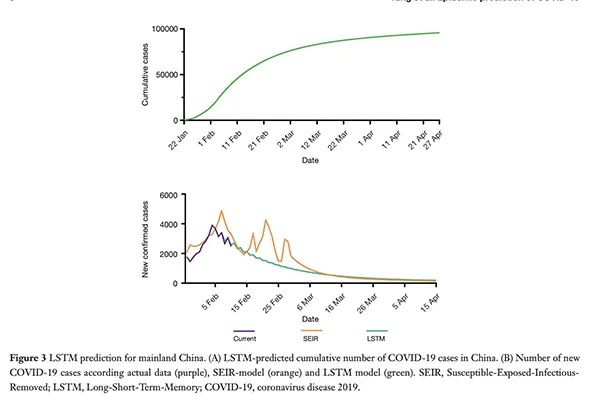
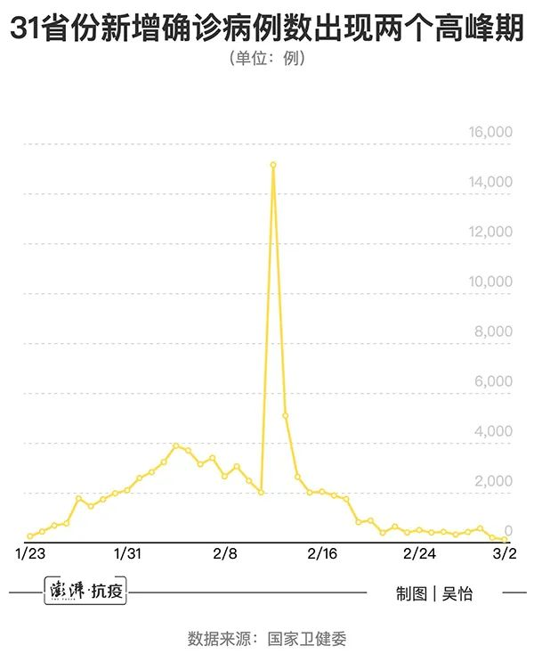
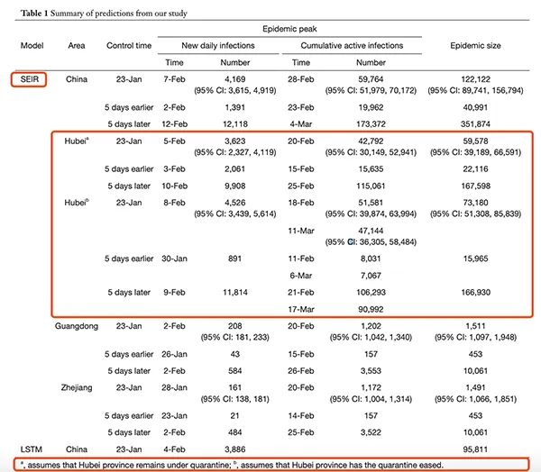

海外70余国累计确诊过万，新冠肺炎进入“全球化”阶段
原文链接 备份链接 图片来源：联合国新闻 记者：肖恩 “ 世卫组织称，世界正处于一个未知领域，但新冠肺炎在传播上不像流感，只要方法得当，完全有可能被遏制。 ” 新冠肺炎的蔓延开始呈现“全球化”趋势，覆盖六大洲超70国，中国以外累计确诊病例 …
澎湃新闻记者 吴怡
“在中国来看，有信心4月底基本控制疫情。”日前，国家卫健委高级别专家组组长、中国工程院院士钟南山在广州医科大学疫情防控专场新闻通气会上说道。
钟南山为何如此有底气得出这个结论？2月28日，一篇发表在Journal of Thoracic Disease（JTD）期刊题为“Modified SEIR and AI prediction of the epidemics trend of COVID-19 in China under public health interventions”（基于 SEIR 优化模型和 AI 对公共卫生干预下的中国COVID-19爆发趋势预测）的研究论文给出了答案。
论文的通讯作者正是广州医科大学呼吸内科教授、国家呼吸系统疾病临床医学研究中心主任钟南山，另一位通讯作者则是广州医科大学附属第一医院胸外科主任、广州呼吸健康研究院院长、呼吸疾病国家重点实验室学组组长何建行。
2020年1月23日，随着新冠肺炎（COVID-19）疫情发展，武汉宣布“封城”，当日起湖北乃至中国采取了前所未有的新冠肺炎疫情防控措施，这些措施包括大规模检疫隔离、严格的人员流动控制和对疑似病例的广泛监控。
钟南山研究团队通过流行病学模型和人工智能预测，内地的疫情将在2月下旬达到高峰，到4月底逐渐下降，最终疫情受感染的患者总规模约为12万例（95%置信区间为89741例至156794例）。
如果将防控措施实施时间（1月23日）推迟5天，数据模型预测，内地的疫情规模将是上述预测结果的近三倍；如果春节假期结束后，湖北取消现行的检疫防控措施，将在3月中旬引发省内第二次疫情流行高峰，并将流行期延长至4月下旬。
“严格的疫情监测和早发现早隔离的政策应保持到2020年4月底。”研究团队总结认为，中国在1月23日开始实施的疫情防控措施对于新冠肺炎疫情规模的减少有效且必要。
研究：若防控干预推迟5天，内地疫情规模扩至近三倍
按照钟南山研究团队的数据模型预测，国内的疫情走向具体是怎么样的？首先，研究模型基于三种数据来源：一、国家卫健委每日报告的新冠肺炎病例数（根据实时荧光RT-PCR检测确诊的病例）。二、基于铁路、航空和道路交通每日出入境的人口迁徙数据。三、2003年4-6月SARS的病例数据集，被用于AI（人工智能）数据训练。
疫情分析研究也使用了两种数据模型：SEIR优化模型（易感-潜伏-感染-隔离流行病传染模型）和深度学习中的LSTM模型（long-short term memory长短期记忆模型）。
考虑到中国内地自1月23日实施疫情防控措施以来，新冠肺炎传播风险有所降低，按照LSTM模型预测，内地新冠肺炎疫情将在2月4日达到高峰，到4月底疫情规模将有95000例。
而SEIR模型预测，内地疫情将在2月28日达到高峰，现有确诊病例数（Cumulative active infections，现有确诊=累计确诊-累计治愈-累计死亡）为59764例（95%置信区间为51979例至70172例）；预计最终疫情规模为122122例（95%置信区间为89741例至156794例）。

SEIR和LSTM模型对于中国内地疫情的预测。
如果内地采取防控干预措施的时间（1月23日）推迟5天，病毒传播机会增多，那会怎样？基于这一条件设定，SEIR模型预测，内地疫情将在3月4日达到峰值，现有确诊将有173372例；到4月底，最终疫情规模将有351874例，是之前预测结果的近三倍。如果将干预措施提早5天实施，那么最终疫情规模将为40991例。
“我们的团队做出了疫情预测模型，2月中旬或下旬达到疫情高峰，确诊病例约六、七万人，投到国外权威期刊，被退了回来。”2月27日，钟南山曾在广州医科大学疫情防控专场新闻通气会上谈及团队的研究。
钟南山透露，在疫情开始时，国外有流行病学家用权威的试验模型，预测2月初中国感染新冠肺炎人数将达16万人。“这是没有考虑到国家的强力干预，也没有考虑春节后的延迟复工。事实上，我们预测更接近权威。”
澎湃新闻（www.thepaper.cn）根据国家卫健委官网数据梳理发现，新冠肺炎患者现有确诊总数的峰值出现在2月17日，当日31个省（自治区、直辖市）和新疆生产建设兵团报告现有确诊病例58016例，累计确诊病例72436例。
这跟上述SEIR模型预测数据（内地疫情2月28日达到高峰，现有确诊59764例，95%置信区间为51979例至70172例）非常吻合，只是高峰期提前了11天。

2月6日-3月2日，31个省（自治区、直辖市）和新疆生产建设兵团新冠肺炎患者现有确诊和累计确诊病例数。澎湃新闻记者吴怡 制图
从疫情发展趋势可以看到，2月17日至3月2日，新冠肺炎患者现有确诊总数出现不断下降，从58016例降至30004例。截至3月2日24时，内地累计报告确诊病例80151例。
内地单日新增确诊病例出现两个高峰期
除了现有确诊病例数，单日新增确诊病例数也是衡量疫情流行趋势的重要指标。研究团队发现，在1月22日至2月10日之间，内地实际的新增确诊病例数与LSTM预测的曲线非常吻合。不过，SEIR模型预测，2月中下旬还会出现几个新增确诊病例的小高峰。

上图为LSTM模型预测内地累计确诊病例数，下图为SEIR和LSTM模型预测内地新增确诊病例数。
SEIR和LSTM模型均预测，内地在2月4日到7日之间达到单日新增感染高峰，每天约有4000例新增确诊病例。
澎湃新闻根据国家卫健委官网数据梳理发现，从1月23日至3月2日，内地单日新增确诊病例出现了两个高峰期，一个是从2月3日至7日，新增确诊病例分别为3235例（2月3日）、3887例（2月4日）、3694例（2月5日）、3143例（2月6日）、3399例（2月7日），略低于上述模型的预测数据。

从1月23日至3月2日，内地单日新增确诊病例数出现两个高峰期。澎湃新闻记者吴怡 制图
另一个高峰期出现在2月12日-13日，这期间湖北省将临床诊断病例纳入确诊病例统计，导致病例数暴增。2月12日，内地新增确诊病例15152例（含湖北临床诊断病例13332例）；2月13日为5090例（含湖北临床诊断病例3095例）。
当前，国内单日新增确诊病例数在不断下降。国家卫健委官网显示，3月2日，内地新增确诊病例125例。这一数字创下1月23日以来单日新增确诊新低。
预测：湖北疫情将在四月下旬接近尾声
自从1月23日武汉“封城”之后，湖北省内各市州也陆续宣布实行严格的交通管制和检疫措施。
钟南山研究团队将2020年2月10日之后湖北省的人口迁徙指数设为零，并基于2月12日之前的确诊病例数，通过模型预测：湖北将在2月20日疫情达到流行高峰，预计疫情将在四月下旬接近尾声，最终确诊病例总数将达到59578例（95%置信区间为39189例至66591例）。
不过，湖北实际的疫情数据比预测结果更高。国家卫健委官网显示，截至3月2日24时，湖北累计确诊病例67217例（武汉49426例）。
研究团队在论文中亦指出，由于当前新冠肺炎的诊断过程和方法存在缺陷，基于PCR检测确诊的病例数和疫情流行曲线可能会低估现实的情况。而SARS流行病数据集（2003年4月-6月期间的病例数），用于预测新冠肺炎的疫情流行趋势也相对有限。

SEIR模型对于湖北省疫情的预测。
而湖北省当前的防控措施是否应该有所放松，如若放松将会有什么后果？
研究团队假设，春节假期结束后，湖北取消现行的检疫限制，允许人员正常流动的话，省内将在2月18日迎来第一个疫情高峰期，并在3月11日迎来第二个高峰，最终疫情规模将比持续实施现行防控措施的疫情规模增加1万3千多例。
研究团队强调，除了湖北持续实施严格的防控检疫措施之外，其他省份投入大量的医疗资源到湖北用于建设新的收治医院和检疫中心，缓解了当地的医疗资源紧缺，降低了病毒的传播风险，这对于疫情规模的减少也起到了作用。
值得关注的是，广东省和浙江省是务工人员流动的大省，截至2月10日，湖北、广东和浙江累计确诊新冠肺炎病例数分别为31728例、1177例和1117例，占全国总病例数的80％。
而广东和浙江最终没有引发新冠肺炎的大流行。SEIR模型预测，两个省份的疫情将在2月20日达到高峰，并在4月中旬结束，广东最终的疫情规模为1511例（95%置信区间为1097例至1948例）；而浙江则为1491例（95%置信区间为1066例至1851例）。
根据广东省、浙江省卫健委官网显示，截至3月2日24时，两省累计报告新冠肺炎确诊病例分别为1350例、1213例。随着广东和浙江的单日新增确诊病例数逐渐减少甚至为零，最终的疫情规模或与上述预测数据较为吻合。
研究团队认为，广东和浙江是仅次于湖北受疫情影响最大的两个省份，由于防控措施执行有力，疫情增长得以放缓，这也表明了检疫隔离和防控措施的有效性。持续的“早发现早隔离”措施也可有效防止广东和浙江爆发第二波流行。
“另外，季节性变化引起的气温变化对于广东省SARS流行的消散很重要。新冠肺炎疫情按照这种逻辑发展的话，与浙江和湖北相比，广东省的疫情有望较早消退。”研究团队表示。
不过需要注意的是，随着国际上新冠肺炎疫情形势逐渐变得严峻，国内还需要注意对境外输入性病例进行防控。浙江省卫健委官网显示，3月2日0-24时，浙江省新增新冠肺炎确诊病例7例（均为丽水市青田县报告的意大利输入病例）。
“当时（研究）没有考虑国外，现在国外情况变了，还要另外考虑，但在中国来看，有信心4月底基本控制疫情。”钟南山在上述广州医科大学疫情防控专场新闻通气会说道。
本期编辑 常琛
推荐阅读


原文链接 备份链接 图片来源：联合国新闻 记者：肖恩 “ 世卫组织称，世界正处于一个未知领域，但新冠肺炎在传播上不像流感，只要方法得当，完全有可能被遏制。 ” 新冠肺炎的蔓延开始呈现“全球化”趋势，覆盖六大洲超70国，中国以外累计确诊病例 …
原文链接 备份链接 目前，新冠肺炎疫情在多国持续蔓延，韩国、意大利、伊朗等国感染人数持续增加，比利时、约旦、沙特、塞内加尔、突尼斯、拉脱维亚等国2日宣布出现首例新冠肺炎确诊病例。 据世卫组织最新报告，截至欧洲中部时间3月2日上午10时（ …
原文链接 备份链接 澎湃新闻 综合报道 中国国内疫情逐渐好转，但这个时候全球各地却不断拉响警报，新冠肺炎全球风险级别由高风险提升至非常高。 据世界卫生组织官网报道，世卫组织总干事谭德塞2日表示，中国的新冠肺炎病例数量在持续下降，在过去24 …
原文链接 备份链接 叶青武汉日记：方舱医院关了一家 5709 来源：正和岛 作者：叶青 03-02正在打榜，当前第3 [ 中国企业家杂志 - - …
原文链接 备份链接 非常时期，武汉成了全国人民挂念、祈福的城市。封城后，武汉人民的真实生活是什么样？随着抗“疫”有条不紊的进行，武汉发生了哪些变化？还存在哪些问题？ 正和岛自1月26日起特别推出“叶青专栏”。叶青是一位定居武汉40年的市 …